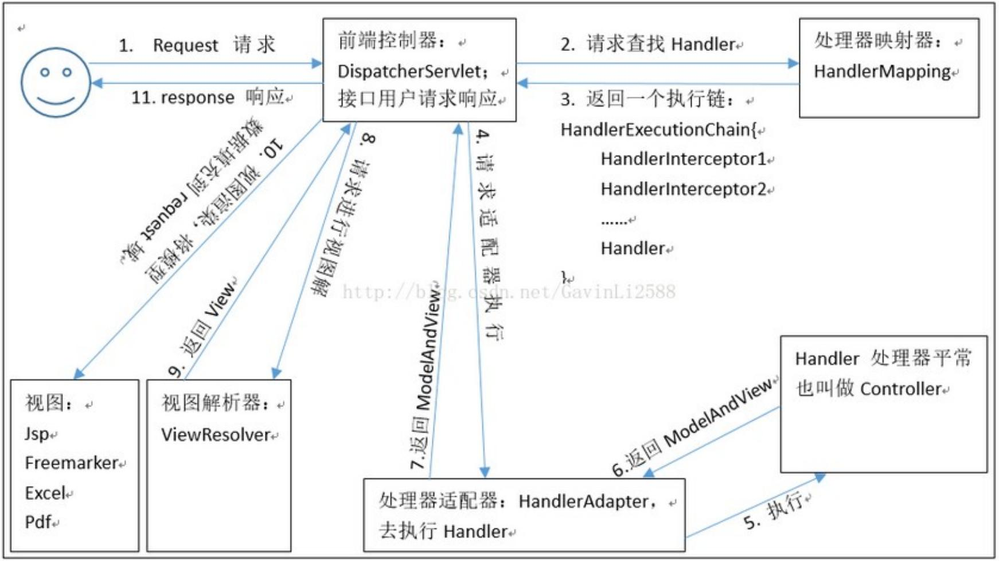

在入门案例的基础上，进一步学习参数的绑定和注解！
入门分析
先看看springMVC的流程：

- 服务器启动，首先是读取web.xml文件，我们应该加载各种配置文件。web.xml中说明了
servlet的配置。 - 但
servlet想要运行起来，我们使用了注解，还需要适当的依赖注入，这时就必须读取springMVC的配置文件。这一步也应该在web.xml中初始化配置。 - 浏览器发送请求,被
DispatherServlet捕获,该 Servlet 并不处理请求,而是把请求转发出去。转发的路径是根据请求 URL,匹配@RequestMapping中的内容。 - 匹配到了后,执行对应方法。该方法有一个返回值。根据方法的返回值,借助
InternalResourceViewResolver找到对应的结果视图。 InternalResourceViewResolver的配置也应该在springMVC.xml中.
相关组件
DispatcherServlet:前端控制器
用户请求到达前端控制器,它就相当于 mvc 模式中的c,dispatcherServlet 是整个流程控制的中心,由它调用其它组件处理用户的请求,dispatcherServlet 的存在降低了组件之间的耦合性。
HandlerMapping:处理器映射器
HandlerMapping 负责根据用户请求找到 Handler 即处理器,SpringMVC 提供了不同的映射器实现不同的映射方式,例如:配置文件方式,实现接口方式,注解方式等。
Handler:处理器
它就是我们开发中要编写的具体业务控制器。由 DispatcherServlet 把用户请求转发到 Handler。由Handler 对具体的用户请求进行处理。
HandlAdapter:处理器适配器
通过 HandlerAdapter 对处理器进行执行,这是适配器模式的应用,通过扩展适配器可以对更多类型的处理器进行执行。
View Resolver:视图解析器
View Resolver 负责将处理结果生成 View 视图,View Resolver 首先根据逻辑视图名解析成物理视图名即具体的页面地址,再生成 View 视图对象,最后对 View 进行渲染将处理结果通过页面展示给用户。
View:视图
SpringMVC 框架提供了很多的 View 视图类型的支持,包括:jstlView、freemarkerView、pdfView等。我们最常用的视图就是 jsp。一般情况下需要通过页面标签或页面模版技术将模型数据通过页面展示给用户,需要由程序员根据业务需求开发具体的页面。
mvc:annotation-driven
在 SpringMVC 的各个组件中,处理器映射器、处理器适配器、视图解析器称为 SpringMVC 的三大组件。使 用 <mvc:annotation-driven> 自 动 加 载 RequestMappingHandlerMapping ( 处 理 映 射 器 ) 和RequestMappingHandlerAdapter ( 处 理 适 配 器 ) , 可 用 在 SpringMVC.xml 配 置 文 件 中 使 用<mvc:annotation-driven>替代注解处理器和适配器的配置。
相当于在springMVC中配置了：
<bean class="org.springframework.web.servlet.mvc.method.annotation.RequestMappingHandlerMapping"/>
<bean class="org.springframework.web.servlet.handler.BeanNameUrlHandlerMapping"/>
<bean class="org.springframework.web.servlet.mvc.method.annotation.RequestMappingHandlerAdapter"/>
<bean class="org.springframework.web.servlet.mvc.HttpRequestHandlerAdapter"/>
<bean class="org.springframework.web.servlet.mvc.SimpleControllerHandlerAdapter"/>
<bean class="org.springframework.web.servlet.mvc.method.annotation.ExceptionHandlerExceptionResolver"/>
<bean class="org.springframework.web.servlet.mvc.annotation.ResponseStatusExceptionResolver"/>
<bean class="org.springframework.web.servlet.mvc.support.DefaultHandlerExceptionResolver"/>
RequestMapping 注解
使用说明
源码：
package org.springframework.web.bind.annotation;
import java.lang.annotation.Documented;
import java.lang.annotation.ElementType;
import java.lang.annotation.Retention;
import java.lang.annotation.RetentionPolicy;
import java.lang.annotation.Target;
import org.springframework.core.annotation.AliasFor;
@Target({ElementType.TYPE, ElementType.METHOD})
@Retention(RetentionPolicy.RUNTIME)
@Documented
@Mapping
public @interface RequestMapping {
String name() default "";
@AliasFor("path")
String[] value() default {};
@AliasFor("value")
String[] path() default {};
RequestMethod[] method() default {};
String[] params() default {};
String[] headers() default {};
String[] consumes() default {};
String[] produces() default {};
}
作用:
用于建立请求 URL 和处理请求方法之间的对应关系。
出现位置:
- 类上
- 请求 URL 的第一级访问目录。此处不写的话,就相当于应用的根目录。写的话需要以/开头。
- 它出现的目的是为了使我们的 URL 可以按照模块化管理
- 方法上
- 请求 URL 的第二级访问目录
属性:
value
- 用于指定请求的 URL,它和 path 属性的作用是一样的。
method
- 用于指定请求的方式。
params
用于指定限制请求参数的条件。它支持简单的表达式。要求请求参数的 key 和 value 必须和配置的一模一样。
- params = {“accountName”},表示请求参数必须有 accountName
- params = {“moeny!100”},表示请求参数中 money 不能是 100。
headers
- 用于指定限制请求消息头的条件。
注意:以上四个属性只要出现 2 个或以上时,他们的关系是与的关系。
示例
出现位置示例：
package uestc.zhangkx.controller;
import org.springframework.stereotype.Controller;
import org.springframework.web.bind.annotation.RequestMapping;
/** Ac测试
* @author zhangkx
*/
@Controller
@RequestMapping("/account")
public class AccountController {
@RequestMapping("/save")
public String saveAccount(){
System.out.println("保存了account!");
return "success";
}
}
method属性示例:
package uestc.zhangkx.controller;
import org.springframework.stereotype.Controller;
import org.springframework.web.bind.annotation.RequestMapping;
import org.springframework.web.bind.annotation.RequestMethod;
/** Ac测试
* @author zhangkx
*/
@Controller
@RequestMapping(value = "/account",method = RequestMethod.POST)
public class AccountController {
@RequestMapping("/save")
public String saveAccount(){
System.out.println("保存了account!");
return "success";
}
}
params 属性示例:
package uestc.zhangkx.controller;
import org.springframework.stereotype.Controller;
import org.springframework.web.bind.annotation.RequestMapping;
import org.springframework.web.bind.annotation.RequestMethod;
/** Ac测试
* @author zhangkx
*/
@Controller
@RequestMapping(value = "/account")
public class AccountController {
@RequestMapping("find")
public String findAccount(){
System.out.println("找到了account!!!");
return "success";
}
@RequestMapping(value = "/save" , method = RequestMethod.POST)
public String saveAccount(){
System.out.println("保存了account!");
return "success";
}
@RequestMapping(value = "/delete",params = {"accountName","money>100"})
public String deleteAccount(){
System.out.println("删除了account!!!");
return "success";
}
}
请求参数的绑定
绑定说明
绑定的机制
我们都知道,表单中请求参数都是基于 key=value 的。
SpringMVC 绑定请求参数的过程是通过把表单提交请求参数,作为控制器中方法参数进行绑定的。
<a href="account/findAccount?accountId=10">查询账户</a>
上述提交可对应绑定至->
@RequestMapping("/findAccount")
public String findAccount(Integer accountId) {
System.out.println("查询了账户。。。。"+accountId);
return "success";
}
支持的数据类型
- 基本类型参数:
- 包括基本类型和 String 类型
- POJO 类型参数:
- 包括实体类,以及关联的实体类
- 数组和集合类型参数:
- 包括 List 结构和 Map 结构的集合(包括数组)
SpringMVC 绑定请求参数是自动实现的,但是要想使用,必须遵循使用要求。
使用要求
如果是基本类型或者 String 类型:
- 要求我们的参数名称必须和控制器中方法的形参名称保持一致。(严格区分大小写)
如果是 POJO 类型,或者它的关联对象:
- 要求表单中参数名称和 POJO 类的属性名称保持一致。并且控制器方法的参数类型是 POJO 类型。
如果是集合类型,有两种方式:
第一种:
要求集合类型的请求参数必须在 POJO 中
在表单中请求参数名称要和 POJO 中集合属性名称相同。
给 List 集合中的元素赋值,使用下标。
给 Map 集合中的元素赋值,使用键值对。
第二种:
- 接收的请求参数是 json 格式数据。需要借助一个注解实现。
注意:它还可以实现一些数据类型自动转换。内置转换器有
org.springframework.core.convert.support 包下。有:
java.lang.Boolean -> java.lang.String : ObjectToStringConverter
java.lang.Character -> java.lang.Number : CharacterToNumberFactory
java.lang.Character -> java.lang.String : ObjectToStringConverter
java.lang.Enum -> java.lang.String : EnumToStringConverter
java.lang.Number -> java.lang.Character : NumberToCharacterConverter
java.lang.Number -> java.lang.Number : NumberToNumberConverterFactory
java.lang.Number -> java.lang.String : ObjectToStringConverter
java.lang.String -> java.lang.Boolean : StringToBooleanConverter
java.lang.String -> java.lang.Character : StringToCharacterConverter
java.lang.String -> java.lang.Enum : StringToEnumConverterFactory
java.lang.String -> java.lang.Number : StringToNumberConverterFactory
java.lang.String -> java.util.Locale : StringToLocaleConverter
java.lang.String -> java.util.Properties : StringToPropertiesConverter
java.lang.String -> java.util.UUID : StringToUUIDConverter
java.util.Locale -> java.lang.String : ObjectToStringConverter
java.util.Properties -> java.lang.String : PropertiesToStringConverter
java.util.UUID -> java.lang.String : ObjectToStringConverter
使用示例
基本类型和 String 类型作为参数
<a href="account/findAccount?accountId=10&accountName=zhangsan">查询账户</a>
@RequestMapping("/findAccount")
public String findAccount(Integer accountId,String accountName) {
System.out.println("查询了账户。。。。"+accountId+","+accountName);
return "success";
}
POJO 类型作为参数
public class Account implements Serializable {
private Integer id;
private String name;
private Float money;
private Address address;
//getters and setters
}
//~~~~~~~~~~~~~~~~~~~~~~~~~~~~~~~~~~~~~~~~~~~~~~~~~~~~~~~~~
public class Address implements Serializable {
private String provinceName;
private String cityName;
//getters and setters
}
<form action="account/saveAccount" method="post">
账户名称:<input type="text" name="name" ><br/>
账户金额:<input type="text" name="money" ><br/>
账户省份:<input type="text" name="address.provinceName" ><br/>
账户城市:<input type="text" name="address.cityName" ><br/>
<input type="submit" value=" 保存 ">
</form>
@RequestMapping("/saveAccount")
public String saveAccount(Account account) {
System.out.println("保存了账户。。。。"+account);
return "success";
}
POJO 类中包含集合类型参数
public class User implements Serializable {
private String username;
private String password;
private Integer age;
private List<Account> accounts;
private Map<String,Account> accountMap;
//getters and setters
@Override
public String toString() {
return "User [username=" + username + ", password=" + password + ", age="
+ age + ",\n accounts=" + accounts
+ ",\n accountMap=" + accountMap + "]";
}
}
<form action="account/updateAccount" method="post">
用户名称:<input type="text" name="username" ><br/>
用户密码:<input type="password" name="password" ><br/>
用户年龄:<input type="text" name="age" ><br/>
账户 1 名称:<input type="text" name="accounts[0].name" ><br/>
账户 1 金额:<input type="text" name="accounts[0].money" ><br/>
账户 2 名称:<input type="text" name="accounts[1].name" ><br/>
账户 2 金额:<input type="text" name="accounts[1].money" ><br/>
账户 3 名称:<input type="text" name="accountMap['one'].name" ><br/>
账户 3 金额:<input type="text" name="accountMap['one'].money" ><br/>
账户 4 名称:<input type="text" name="accountMap['two'].name" ><br/>
账户 4 金额:<input type="text" name="accountMap['two'].money" ><br/>
<input type="submit" value=" 保存 ">
</form>
@RequestMapping("/updateAccount")
public String updateAccount(User user) {
System.out.println("更新了账户。。。。"+user);
return "success";
}
请求参数乱码问题
tomacat 对 GET 和 POST 请求处理方式是不同的
POST
在 web.xml 中配置一个过滤器：
<!-- 配置 springMVC 编码过滤器 -->
<filter>
<filter-name>CharacterEncodingFilter</filter-name>
<filter-class>
org.springframework.web.filter.CharacterEncodingFilter
</filter-class>
<!-- 设置过滤器中的属性值 -->
<init-param>
<param-name>encoding</param-name>
<param-value>UTF-8</param-value>
</init-param>
<!-- 启动过滤器 -->
<init-param>
<param-name>forceEncoding</param-name>
<param-value>true</param-value>
</init-param>
</filter>
<!-- 过滤所有请求 -->
<filter-mapping>
<filter-name>CharacterEncodingFilter</filter-name>
<url-pattern>/*</url-pattern>
</filter-mapping>
在 springmvc 的配置文件中可以配置,静态资源不过滤
<!-- location 表示路径,mapping 表示文件,**表示该目录下的文件以及子目录的文件 -->
<mvc:resources location="/css/" mapping="/css/**"/>
<mvc:resources location="/images/" mapping="/images/**"/>
<mvc:resources location="/scripts/" mapping="/javascript/**"/>
GET
GET 请求的编码问题,要改 tomcat 的 server.xml配置文件：
<Connector connectionTimeout="20000"
port="8080"
protocol="HTTP/1.1" redirectPort="8443"/>
改为:
<Connector connectionTimeout="20000"
port="8080"
protocol="HTTP/1.1" redirectPort="8443"
useBodyEncodingForURI="true"/>
如果遇到 ajax 请求仍然乱码,请把:
useBodyEncodingForURI="true"
改为
URIEncoding="UTF-8"
特殊情况
自定义类型转换器
例如日期类型，一般就需要转换
<!-- 特殊情况之:类型转换问题 -->
<a href="account/deleteAccount?date=2018-01-01">根据日期删除账户</a>
@RequestMapping("/deleteAccount")
public String deleteAccount(String date) {
System.out.println("删除了账户。。。。"+date);
return "success";
}
当我们把参数改为Data类型时，就无法运行了，会抛出MethodArgumentTypeMismatchException，这时，需要使用类型转换器。
package uestc.zhangkx.utils;
import org.springframework.core.convert.converter.Converter;
import java.text.DateFormat;
import java.text.SimpleDateFormat;
import java.util.Date;
/**
* 把字符串转换日期
*/
public class StringToDateConverter implements Converter<String,Date>{
/**
* String source 传入进来字符串
* @param source
* @return
*/
public Date convert(String source) {
// 判断
if(source == null){
throw new RuntimeException("请您传入数据");
}
DateFormat df = new SimpleDateFormat("yyyy-MM-dd");
try {
// 把字符串转换日期
return df.parse(source);
} catch (Exception e) {
throw new RuntimeException("数据类型转换出现错误");
}
}
}
创造了转换器，还需要讲这个转化器配置一下：
<!-- 注册自定义类型转换器 -->
<bean id="conversionService"
class="org.springframework.context.support.ConversionServiceFactoryBean">
<property name="converters">
<set>
<bean class="uestc.zhangkx.utils.StringToDateConverter"/>
</set>
</property>
</bean>
<!-- 开启Spring对MVC注解的支持 -->
<mvc:annotation-driven conversion-service="conversionService"/>
综合案例
web
<%--
Created by IntelliJ IDEA.
User: zhangkx
Date: 2020/4/20
Time: 下午6:10
To change this template use File | Settings | File Templates.
--%>
<%@ page contentType="text/html;charset=UTF-8" language="java" %>
<html>
<head>
<title>入门</title>
</head>
<body>
<h1>输入信息</h1>
<form action="account/get" method="post">
名字：<input type="text" name="name"/><br>
年龄：<input type="text" name="age"/><br>
生日：<input type="text" name="birthday"/><br>
钱包号码：<input type="text" name="pocket.id"/><br>
钱包金额：<input type="text" name="pocket.money"/><br>
list1代号：<input type="text" name="pocket.list[0]"/><br>
list2代号：<input type="text" name="pocket.list[1]"/><br>
map1：<input type="text" name="pocket.map['one']"/><br>
map2：<input type="text" name="pocket.map['two']"/><br>
<input type="submit" value=" 保存 ">
</form>
</body>
</html>
<%--
Created by IntelliJ IDEA.
User: zhangkx
Date: 2020/4/20
Time: 下午6:09
To change this template use File | Settings | File Templates.
--%>
<%@ page contentType="text/html;charset=UTF-8" language="java" %>
<html>
<head>
<title>Title</title>
</head>
<body>
<h1>success!!!!</h1>
</body>
</html>
<!DOCTYPE web-app PUBLIC
"-//Sun Microsystems, Inc.//DTD Web Application 2.3//EN"
"http://java.sun.com/dtd/web-app_2_3.dtd" >
<web-app>
<display-name>Archetype Created Web Application</display-name>
<servlet>
<servlet-name>SpringMVCDispatcherServlet</servlet-name>
<servlet-class>
org.springframework.web.servlet.DispatcherServlet
</servlet-class>
<!-- 配置初始化参数,用于读取 SpringMVC 的配置文件 -->
<init-param>
<param-name>contextConfigLocation</param-name>
<param-value>classpath:springMVC.xml</param-value>
</init-param>
<!-- 配置 servlet 的对象的创建时间点:应用加载时创建。
取值只能是非 0 正整数,表示启动顺序 -->
<load-on-startup>1</load-on-startup>
</servlet>
<servlet-mapping>
<servlet-name>SpringMVCDispatcherServlet</servlet-name>
<url-pattern>/</url-pattern>
</servlet-mapping>
<!-- 配置SpringMVC设置编码方式的过滤器 -->
<filter>
<filter-name>encoding</filter-name>
<filter-class>org.springframework.web.filter.CharacterEncodingFilter</filter-class>
<init-param>
<param-name>encoding</param-name>
<param-value>utf-8</param-value>
</init-param>
<init-param>
<param-name>forceRequestEncoding</param-name>
<param-value>true</param-value>
</init-param>
</filter>
<filter-mapping>
<filter-name>encoding</filter-name>
<url-pattern>/*</url-pattern>
</filter-mapping>
</web-app>
domain
package uestc.zhangkx.domain;
import java.util.Date;
/**
* @author zhangkx
*/
public class Account {
private String name;
private String age;
private Date birthday;
private Pocket pocket;
public String getName() {
return name;
}
public void setName(String name) {
this.name = name;
}
public String getAge() {
return age;
}
public void setAge(String age) {
this.age = age;
}
public Date getBirthday() {
return birthday;
}
public void setBirthday(Date birthday) {
this.birthday = birthday;
}
public Pocket getPocket() {
return pocket;
}
public void setPocket(Pocket pocket) {
this.pocket = pocket;
}
@Override
public String toString() {
return "Account{" +
"name='" + name + '\'' +
", age='" + age + '\'' +
", birthday=" + birthday +
", pocket=" + pocket +
'}';
}
}
package uestc.zhangkx.domain;
import java.util.List;
import java.util.Map;
/**
* @author zhangkx
*/
public class Pocket {
private int id;
private double money;
private List<String> list;
private Map<String,Integer> map;
public int getId() {
return id;
}
public void setId(int id) {
this.id = id;
}
public double getMoney() {
return money;
}
public void setMoney(double money) {
this.money = money;
}
public List<String> getList() {
return list;
}
public void setList(List<String> list) {
this.list = list;
}
public Map<String, Integer> getMap() {
return map;
}
public void setMap(Map<String, Integer> map) {
this.map = map;
}
@Override
public String toString() {
return "Pocket{" +
"id=" + id +
", money=" + money +
", list=" + list +
", map=" + map +
'}';
}
}
controller
package uestc.zhangkx.controller;
import org.springframework.stereotype.Controller;
import org.springframework.web.bind.annotation.RequestMapping;
import org.springframework.web.bind.annotation.RequestMethod;
import uestc.zhangkx.domain.Account;
/** Ac类
* @author zhangkx
*/
@Controller
@RequestMapping(value = "/account",method = {RequestMethod.GET,RequestMethod.POST})
public class AccountController {
@RequestMapping(value = "/get")
public String getAccountInfo(Account account){
System.out.println("controller中得到的Account是:"+account);
return "success";
}
}
utils
package uestc.zhangkx.utils;
import org.springframework.core.convert.converter.Converter;
import java.text.DateFormat;
import java.text.SimpleDateFormat;
import java.util.Date;
/**
* @author zhangkx
*/
public class StringToDateConverter implements Converter<String, Date> {
@Override
public Date convert(String s) {
if (null == s){
throw new RuntimeException("数据没有！");
}
DateFormat df = new SimpleDateFormat("yyyy-MM-dd");
try{
return df.parse(s);
}catch (Exception e){
throw new RuntimeException("数据类型转换错误");
}
}
}
resource
<?xml version="1.0" encoding="UTF-8"?>
<beans xmlns="http://www.springframework.org/schema/beans"
xmlns:mvc="http://www.springframework.org/schema/mvc"
xmlns:context="http://www.springframework.org/schema/context"
xmlns:xsi="http://www.w3.org/2001/XMLSchema-instance"
xsi:schemaLocation="http://www.springframework.org/schema/beans
http://www.springframework.org/schema/beans/spring-beans.xsd
http://www.springframework.org/schema/mvc
http://www.springframework.org/schema/mvc/spring-mvc.xsd
http://www.springframework.org/schema/context
http://www.springframework.org/schema/context/spring-context.xsd">
<!-- 配置创建 spring 容器要扫描的包 -->
<context:component-scan base-package="uestc.zhangkx"/>
<!-- 配置视图解析器 -->
<bean id="internalResourceViewResolver" class="org.springframework.web.servlet.view.InternalResourceViewResolver">
<property name="prefix" value="/WEB-INF/pages/"/>
<property name="suffix" value=".jsp"/>
</bean>
<!-- 注册自定义类型转换器 -->
<bean id="conversionService"
class="org.springframework.context.support.ConversionServiceFactoryBean">
<property name="converters">
<set>
<bean class="uestc.zhangkx.utils.StringToDateConverter"/>
</set>
</property>
</bean>
<!-- 开启Spring对MVC注解的支持 -->
<mvc:annotation-driven conversion-service="conversionService"/>
</beans>
pom
<?xml version="1.0" encoding="UTF-8"?>
<project xmlns="http://maven.apache.org/POM/4.0.0" xmlns:xsi="http://www.w3.org/2001/XMLSchema-instance"
xsi:schemaLocation="http://maven.apache.org/POM/4.0.0 http://maven.apache.org/xsd/maven-4.0.0.xsd">
<modelVersion>4.0.0</modelVersion>
<groupId>uestc.zhangkx</groupId>
<artifactId>QS</artifactId>
<version>1.0-SNAPSHOT</version>
<packaging>war</packaging>
<name>QS Maven Webapp</name>
<!-- FIXME change it to the project's website -->
<url>http://www.example.com</url>
<properties>
<project.build.sourceEncoding>UTF-8</project.build.sourceEncoding>
<maven.compiler.source>1.7</maven.compiler.source>
<maven.compiler.target>1.7</maven.compiler.target>
</properties>
<dependencies>
<dependency>
<groupId>junit</groupId>
<artifactId>junit</artifactId>
<version>4.11</version>
<scope>test</scope>
</dependency>
<dependency>
<groupId>org.springframework</groupId>
<artifactId>spring-webmvc</artifactId>
<version>5.2.5.RELEASE</version>
</dependency>
<dependency>
<groupId>commons-logging</groupId>
<artifactId>commons-logging</artifactId>
<version>1.2</version>
</dependency>
</dependencies>
<build>
<finalName>QS</finalName>
<pluginManagement><!-- lock down plugins versions to avoid using Maven defaults (may be moved to parent pom) -->
<plugins>
<plugin>
<artifactId>maven-clean-plugin</artifactId>
<version>3.1.0</version>
</plugin>
<!-- see http://maven.apache.org/ref/current/maven-core/default-bindings.html#Plugin_bindings_for_war_packaging -->
<plugin>
<artifactId>maven-resources-plugin</artifactId>
<version>3.0.2</version>
</plugin>
<plugin>
<artifactId>maven-compiler-plugin</artifactId>
<version>3.8.0</version>
</plugin>
<plugin>
<artifactId>maven-surefire-plugin</artifactId>
<version>2.22.1</version>
</plugin>
<plugin>
<artifactId>maven-war-plugin</artifactId>
<version>3.2.2</version>
</plugin>
<plugin>
<artifactId>maven-install-plugin</artifactId>
<version>2.5.2</version>
</plugin>
<plugin>
<artifactId>maven-deploy-plugin</artifactId>
<version>2.8.2</version>
</plugin>
</plugins>
</pluginManagement>
</build>
</project>
<?xml version="1.0" encoding="UTF-8"?>
<module type="JAVA_MODULE" version="4">
<component name="CheckStyle-IDEA-Module">
<option name="configuration">
<map />
</option>
</component>
</module>
常见注解
RequestParam
使用说明
作用:
把请求中指定名称的参数给控制器中的形参赋值。
属性:
- value:请求参数中的名称。
- required:请求参数中是否必须提供此参数。默认值:true。表示必须提供,如果不提供将报错。
RequestBody
使用说明
作用:
用于获取请求体内容。直接使用得到是 key=value&key=value…结构的数据。
get 请求方式不适用。
属性:
- required:是否必须有请求体。默认值是:true。当取值为 true 时,get 请求方式会报错。如果取值为 false,get 请求得到是 null。
PathVaribale
使用说明
作用:
用于绑定 url 中的占位符。例如:请求 url 中 /delete/{id},这个{id}就是 url 占位符。
url 支持占位符是 spring3.0 之后加入的。是 springmvc 支持 rest 风格 URL 的一个重要标志。
属性:
- value:用于指定 url 中占位符名称。
- required:是否必须提供占位符。
HiddentHttpMethodFilter
作用:
由于浏览器 form 表单只支持 GET 与 POST 请求,而 DELETE、PUT 等 method 并不支持,Spring3.0 添加了一个过滤器,可以将浏览器请求改为指定的请求方式,发送给我们的控制器方法,使得支持 GET、POST、PUT
与 DELETE 请求。
使用方法:
第一步:在 web.xml 中配置该过滤器。
第二步:请求方式必须使用 post 请求。
第三步:按照要求提供_method 请求参数,该参数的取值就是我们需要的请求方式。
RequestHeader
使用说明
作用:
用于获取请求消息头。
属性:
- value:提供消息头名称
- required:是否必须有此消息头
CookieValue
作用:
用于把指定 cookie 名称的值传入控制器方法参数。
属性:
- value:指定 cookie 的名称。
- required:是否必须有此 cookie。
ModelAttribute
作用:
该注解是 SpringMVC4.3 版本以后新加入的。它可以用于修饰方法和参数。
- 出现在方法上,表示当前方法会在控制器的方法执行之前,先执行。它可以修饰没有返回值的方法,也可以修饰有具体返回值的方法。
- 出现在参数上,获取指定的数据给参数赋值。
属性:
value:用于获取数据的 key。key 可以是 POJO 的属性名称,也可以是 map 结构的 key。